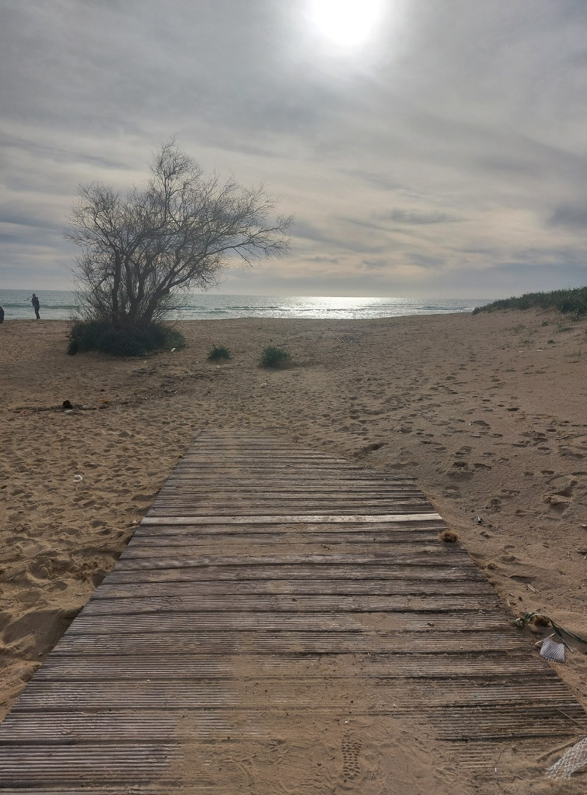
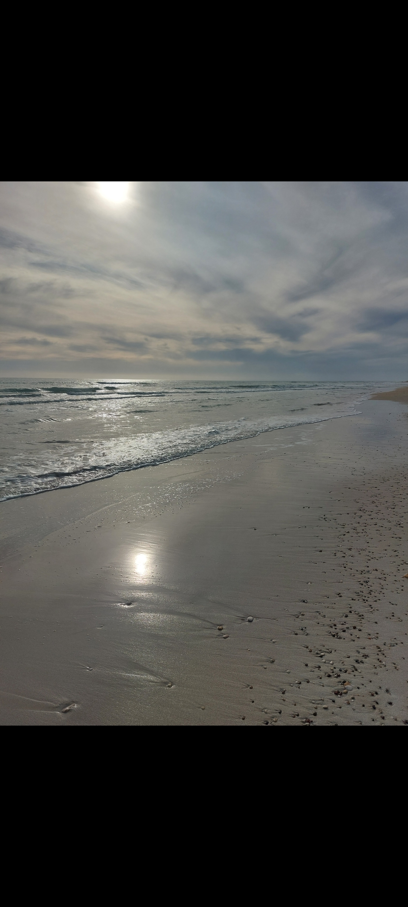
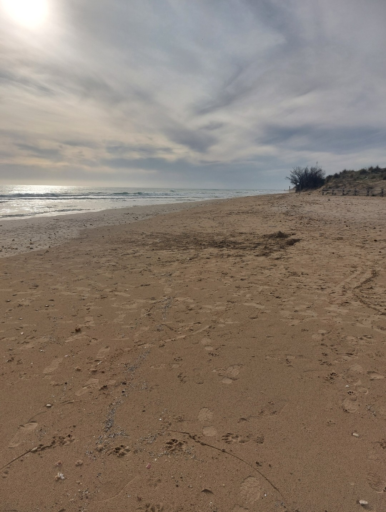
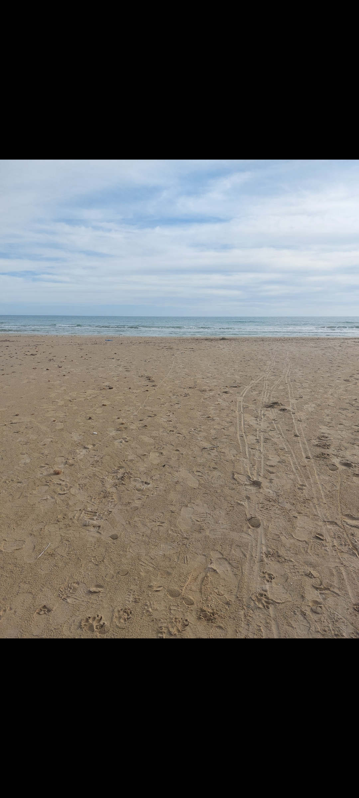

Pescoluse, conosciuta in tutto il mondo come le "Maldive del Salento", è una delle spiagge più spettacolari e fotografate d'Italia. Situata nel comune di Salve, a soli 3 km da Torre Pali, vicino a Lido Marini e Torre Vado, questa incredibile spiaggia offre uno scenario caraibico con sabbia finissima e bianchissima, acque turchesi cristalline e fondali bassi che si estendono per decine di metri.
Il soprannome "Maldive del Salento" non è casuale: i colori del mare, che vanno dal turchese chiaro all'azzurro intenso, ricordano perfettamente le spiagge tropicali dell'Oceano Indiano. La sabbia finissima, chiara e soffice, insieme alla trasparenza dell'acqua, crea un'atmosfera da sogno che attira ogni anno migliaia di turisti da tutta Europa.
Finissima come borotalco
Colori caraibici mozzafiato
Perfetti per famiglie
Pescoluse si trova sulla costa ionica del Salento, tra Torre Pali (3 km) e Torre Vado (2 km). La località fa parte del comune di Salve ed è facilmente raggiungibile dalla strada litoranea SP358. Dista circa 70 km da Lecce, 12 km da Santa Maria di Leuca e 120 km dall'aeroporto di Brindisi.
La spiaggia di Pescoluse si estende per circa 4 chilometri di costa ininterrotta, offrendo ampio spazio sia per chi cerca il comfort degli stabilimenti balneari attrezzati, sia per chi preferisce la spiaggia libera e la natura selvaggia.
Il mare di Pescoluse è famoso per le sue sfumature di colore che variano durante il giorno e con le condizioni di luce. Al mattino presto l'acqua appare di un turchese chiaro trasparente, quasi irreale. A mezzogiorno, con il sole a picco, il mare diventa di un azzurro intenso brillante. Nel pomeriggio e al tramonto, i riflessi dorati del sole creano giochi di luce magici sulla superficie dell'acqua.
✅ Orario Migliore: Mattina presto (7-9) o tardo pomeriggio (17-19) per luce ottimale
✅ Prospettive: Scatta dall'acqua verso la riva per catturare il contrasto sabbia-mare
✅ Colori: Il turchese è più intenso nelle giornate soleggiate con mare calmo
✅ Droni: Permessi in alcune zone, viste aeree spettacolari
✅ Tramonto: Imperdibile per scatti romantici e colori caldi
Lungo la costa di Pescoluse si trovano diversi stabilimenti balneari moderni e ben attrezzati, ognuno con la propria identità. Molti lidi offrono:
Le spiagge di Pescoluse offrono sia tratti liberi che stabilimenti balneari attrezzati con ombrelloni, lettini, bar, ristoranti, docce, servizi igienici e assistenza bagnanti. Molti lidi organizzano attività sportive, corsi di acquagym, animazione per bambini e serate musicali.
Scopri gli stabilimenti balneari più apprezzati di Pescoluse, ognuno con le proprie caratteristiche e servizi per rendere perfetta la tua giornata in spiaggia.
Maldive del Salento: Lido storico e simbolo della zona, offre ombrelloni, lettini, bar, ristorante, animazione e servizi per famiglie. Mare cristallino e sabbia bianca, ideale per chi cerca comfort e relax
Le Cinque Vele: Exclusive Beach Club moderno, con aree luxury, relax, servizi baby sitting, Wi-Fi, docce, parcheggio e ristorante. Atmosfera elegante e servizi di alto livello per una giornata di mare indimenticabile
Lido 77: Stabilimento giovane e dinamico, ideale per gruppi e famiglie, con beach bar, eventi, sport e servizi in spiaggia. Ambiente informale e divertente a pochi passi dal mare
Ampi tratti di spiaggia libera sono disponibili per chi preferisce un'esperienza più selvaggia e indipendente. Si consiglia di portare ombrellone, acqua e spuntini. La spiaggia libera è perfetta per famiglie con animali domestici (verificare le zone pet-friendly) e per chi cerca tranquillità lontano dalla folla.
• Ombrellone + 2 Lettini: €15-25 al giorno
• Abbonamento Settimanale: €80-150
• Abbonamento Mensile: €250-400
• Spiaggia Libera: Gratuita
I prezzi variano in base alla posizione, servizi offerti e periodo (giugno, luglio-agosto, settembre).
Il Parco dei Gigli è una delle aree naturali più suggestive di Pescoluse, famosa per la presenza dei rari gigli di mare (Pancratium maritimum) che fioriscono spontaneamente tra le dune sabbiose durante l'estate. Questo piccolo paradiso naturale si trova a pochi passi dalla spiaggia e offre un paesaggio unico, ideale per chi ama la natura, le passeggiate e la fotografia.
Alcune immagini del Parco dei Gigli a Pescoluse: natura, giochi e relax tra le dune.
Pescoluse è considerata una delle spiagge più family-friendly del Salento. I fondali bassissimi e digradanti permettono ai bambini di giocare in acqua in totale sicurezza, mentre i genitori possono rilassarsi senza preoccupazioni.
Molti stabilimenti offrono fasciatoi, scaldabiberon, seggioloni e aree ombreggiate dedicate ai più piccoli. L'acqua calma e trasparente permette di vedere sempre i bambini mentre giocano in acqua.
Oltre al relax in spiaggia, Pescoluse e dintorni offrono diverse attività per tutti i gusti.
Durante l'estate, Pescoluse si anima con eventi serali, concerti sulla spiaggia, aperitivi al tramonto e feste nei lidi. Molti stabilimenti organizzano serate DJ, cene in spiaggia e feste in maschera a tema tropicale.
• Sunset Party: Aperitivi al tramonto con musica live
• Beach Party: Serate danzanti sulla sabbia
• Tornei Sportivi: Beach volley, calcetto, frisbee
• Yoga all'Alba: Sessioni di meditazione e yoga
• Concerti: Musica dal vivo nei lidi e sul lungomare
Pescoluse fa parte del bellissimo tratto costiero delle Marine di Salve. Scopri anche le altre spiagge vicine, ognuna con le sue caratteristiche uniche!
Isola della Fanciulla, Bandiera Blu, molo per tuffi. A soli 3 km da Pescoluse.
Scopri Torre Pali →Piscina naturale, porto turistico, tradizione marinara. A 2 km da Pescoluse.
Scopri Torre Vado →Pineta mediterranea, spiaggia tranquilla, ideale per famiglie. A 5 km da Pescoluse.
Scopri Lido Marini →Pescoluse offre numerosi ristoranti, trattorie e lidi con cucina dove gustare specialità di pesce fresco e piatti tipici salentini.
Molti lidi offrono ristoranti con vista mare dove pranzare o cenare a piedi nudi sulla sabbia, godendo di tramonti spettacolari e piatti preparati con il pescato del giorno.
Da Lecce: SS16 verso sud, poi SP358 direzione Leuca. Seguire indicazioni Pescoluse/Torre Pali (60 km, 50 minuti)
Da Gallipoli: SS274 verso sud (35 km, 35 minuti)
Da Brindisi: SS16 fino a Lecce, poi SS613 verso Gallipoli e SS274 verso sud (120 km, 1h 30min)
Da Santa Maria di Leuca: SP358 verso nord (12 km, 15 minuti)
Pescoluse dista circa 3 km da Torre Pali. Per arrivare, basta percorrere la strada litoranea SP 91 in direzione sud (verso Santa Maria di Leuca). Il tragitto dura circa 5 minuti in auto e offre splendide viste sulla costa. È possibile raggiungere Pescoluse anche a piedi o in bici, seguendo il percorso panoramico tra le dune e la spiaggia.
Lungo la strada litoranea e nelle vie adiacenti alla spiaggia si trovano parcheggi a pagamento custoditi. Prezzi indicativi: €3-5 al giorno. Si consiglia di arrivare presto la mattina (prima delle 9:30) per trovare posto facilmente, soprattutto in luglio e agosto.
Durante l'estate, autobus di linea collegano Lecce con Pescoluse. Il servizio è limitato, verificare orari aggiornati su siti FSE e Salento in Bus.
✅ Alta Stagione (Luglio-Agosto): Arrivare entro le 9:00 per trovare parcheggio e posto in spiaggia
✅ Prenotazione: Alcuni lidi accettano prenotazioni online
✅ Attrezzatura: Portare crema solare, cappello e occhiali da sole
✅ Acqua: Bere molta acqua, il sole è molto forte
✅ Bassa Stagione: Giugno e settembre sono mesi ideali per evitare la folla
Pescoluse è circondata da località meravigliose facilmente raggiungibili.
Pescoluse si trova sulla costa ionica del Salento, tra Torre Pali e Torre Vado, nel comune di Salve (LE). Scopri Torre Pali e Torre Vado.
Il mare di Pescoluse è famoso per le sue acque turchesi, limpide e con fondali bassi ideali per famiglie e bambini. Guida spiagge Salento Sud.
Sì, a Pescoluse sono presenti numerosi lidi attrezzati con ombrelloni, lettini, bar, ristoranti e servizi vari. Scopri i migliori lidi.
Pescoluse è facilmente raggiungibile in auto dalla SS274, uscita Salve/Pescoluse, oppure con autobus locali dalle principali città del Salento. Come arrivare.
Prenota la tua vacanza a pochi passi dalla spiaggia più bella d'Italia
Vedi Appartamenti Contattaci